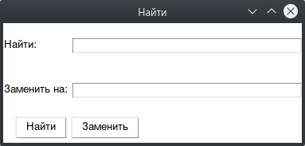
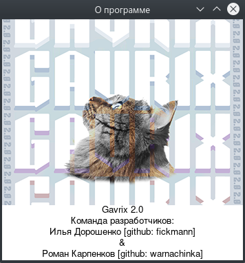

1. Main Menu¶
The main menu of the application is located in the upper part of the window. It contains the following items:
Gavrix
Edit
Find
View
About
1.1 Gavrix Menu¶
This menu contains the following items:
New File
Open
Save
Save as
Close
Open Folder
Refresh
Close folder
They are responsible for interacting with files and folders. Let’s consider them separately.
1.1.1 File interaction¶
New File - opens a new empty file, the default name is “Newfile.txt”. The file will open in a new tab.
Open file - opens a window with an explorer, in which the user needs to select the file he wants to open. The selected file will appear in a new tab.
Save file - saves the current state of the file. If the file has not been stored anywhere before (it was created inside the program), then it works in the same way as Save As.
Save As - opens a window with an explorer, in which the user needs to select in which folder and under what name the file should be saved.
Close file - removes the tab with the file from the program window.
1.1.2 Folder interaction¶
Open folder - opens a window with an explorer, in which the user needs to select the folder he wants to open. The selected folder and its contents will be displayed in the corresponding widget on the left.
Refresh Explorer - Refreshes the widget to reflect the changes in the folder.
Close folder - Removes an open folder from the widget.
1.2 Edit Menu¶
This menu contains the following items:
Undo
Redo
Cut
Copy
Paste
Delete
Select All
The exact same window can be called by right-clicking on the text widget. Items in this menu are responsible for editing text. Let’s consider them in more detail:
Undo - Undoes the last performed action.
Redo - erases the last undone action.
Cut - cuts the selected text.
Copy - copies the selected text to the clipboard.
Paste - inserts the selected text.
Delete - deletes the selected text.
Select All - selects all the text of the opened document.
1.2 Find Button¶
When clicked, it opens a pop-up window that looks like this:
In the Find field, enter the text that you want to find in the file. If it needs to be replaced with something else, then the Replace field is filled in.
The buttons Find and Replace are responsible for finding and replacing text, respectively.
1.3 View Menu¶
Contains two items - Scale and Theme.
1.3.1 Change Scale¶
The app supports 5 different font sizes. The current scale is displayed on the menu item after the colon. The selected scale is saved after the application is closed and used by default the next time it is started. The selected scale is applied to all tabs.
1.3.2 Change theme¶
By default, 2 themes are supported - Light and Dark. Their names, as well as the colors used, can be configured in the theme.json file, which is located in the themes folder. Changing the current theme requires a restart of the application, which prompts a pop-up window asking for confirmation of the restart. The current session and all open files will be preserved across restart.
1.4 About button¶
When clicked, it opens the following window containing the names and nicknames on the github of the developers who worked on this program tirelessly
